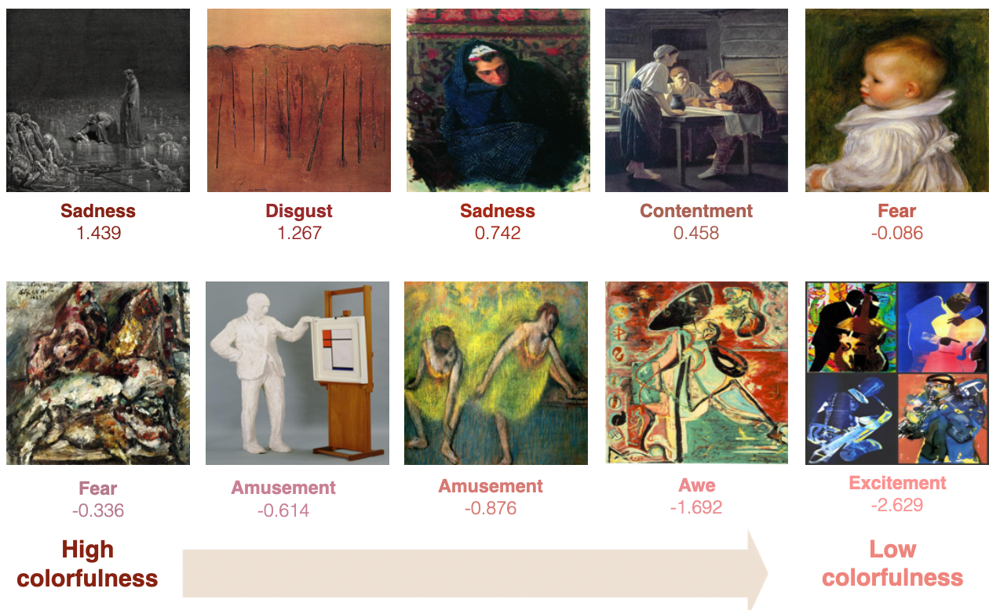

Analysis results
We carry out the precedure described in the Methods section to obtain the 6 individual rankings and an overall ranking of the handcrafted features. The table below lists the top 10 features from each ranking. We see that the overall most important feature is GLCM contrast (saturation), followed by colorfulness and black. The top 10 features overall are color coded for better visibility. We observe consistency between individual rankings and the overall ranking.
The top three features, GLCM contrast (saturation), colorfulness and black are all low-level features. GLCM contrast (saturation) is a texture feature that measures average the saturation contrast between a pixel and its neighbor over the whole image. That is, it measure local saturation contrast in a painting. Figure 3 shows some paintings with their ground truth majority emotion and normalized GLCM contrast (saturation) value. As can be seen, paintings with higher GLCM contrast (saturation) values tend to contain more disjoint small blocks of colors and more distinct edges separating colors of different saturation. Both intuitively and empirically, we observe high GLCM contrast (saturation) values to correlate with negative effect on emotion.

The second most important feature is colorfulness. Colorfulness measures the Earth Mover’s Distance between the histogram of the painting and the histogram having a uniform color distribution. Empirically, lower colorfulness value induces positive net emotional effect. Figure 4 shows some paintings with their normalized colorfulness value. As can be seen in Figure 4, paintings with higher colorfulness values tend to be dominanted by a single color, and paintings with lower colorfulness values tend use all colors uniformly.
